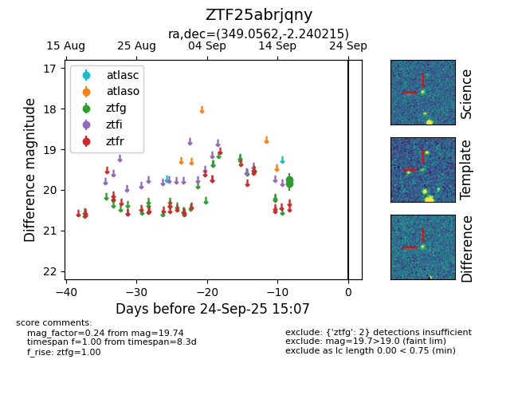

FINK: ZTF25abrjqny
Lasair: ZTF25abrjqny
ALeRCE: ZTF25abrjqny
ZTF25abrjqny (ztf,fink)
equatorial (ra, dec) = (349.0562,-2.24022)
galactic (l, b) = (76.3856,-56.25151)

last ztfg=19.74
2 ztfg detections